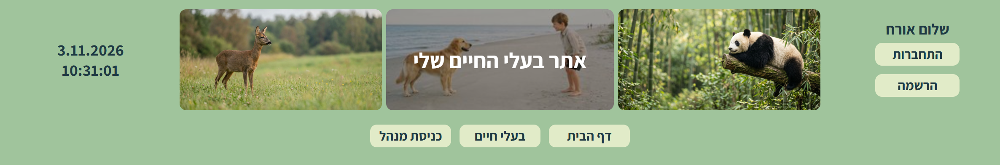
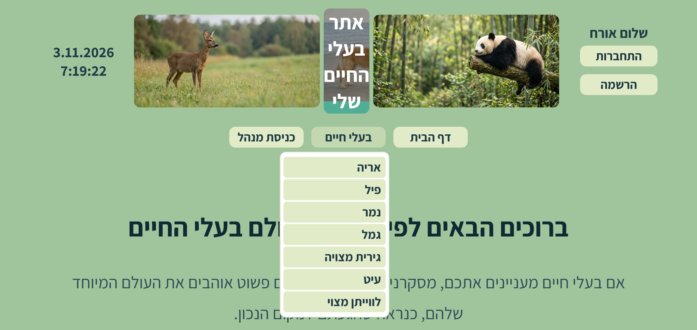

מה בונים?
כשהעכבר עובר על הפריט של דף הרשימה בתפריט העליון, נפתחת מתחתיו רשימה של כל דפי הפריטים. לוחצים על אחד מהם, ומגיעים ישר לדף שלו, בלי לעבור דרך דף הרשימה.
באתר המלווה: כשהעכבר על "בעלי חיים", נפתחת רשימה של שבעת דפי בעלי החיים.


מה לא משתנה: כשהעכבר לא על התפריט, האתר נראה בדיוק כמו היום. אותם כפתורים, באותו רוחב ובאותם מרווחים.
את כל זה כבר למדתם
- רשימה ובתוכה רשימה (
<ul>בתוך<li>): סעיף 1.7.3 - התפריט כמחרוזת שנבנית ב-C#, לפי מי שמחובר (
menuBar): תחנה 15 - המאפיין
display, והערךnoneשמסתיר: סעיף 3.3.2 - המאפיין
display: inline-block: סעיף 5.2.2 - הבורר
:hover: סעיף 5.2.4 - כלל ששומר על צבע הכפתורים גם בדף הרשימה: תחנה 4
ומה חדש כאן: שני מאפיינים, position ו-z-index. נסביר אותם כשנגיע אליהם, בשלב 3.
שלב 1 · התפריט הופך לרשימה
היום התפריט העליון הוא שורה של קישורים בתוך div. כדי שלפריט אחד תהיה רשימה שנפתחת ממנו, צריך קודם להפוך את כל התפריט לרשימה: כל קישור בתוך <li>, וכל ה-<li> בתוך <ul> אחד.
בקובץ MasterPage.Master.cs, בתוך Page_Load. היום (בסוף תחנה 18) התחלת התפריט נראית כך:
menuBar = "<div class='mpMenuBar'>"; // --- תפריט אופקי ---
menuBar += "<a href='Default.aspx' class='mpMenuBarBtn'>דף הבית</a>";
menuBar += "<a href='Animals.aspx' class='mpMenuBarBtn'>בעלי חיים</a>";אחרי: נותנים ל-<ul> את השם nav (בעזרת id), כדי שכללי ה-CSS יפנו רק אליו ולא לכל רשימה באתר. כל קישור נכנס ל-<li>.
//--- תפריט אופקי: רשימה מקוננת ---
menuBar = "<div class='mpMenuBar'><ul id='nav'>";
menuBar += "<li><a href='Default.aspx'"
+ " class='mpMenuBarBtn'>דף הבית</a></li>";
menuBar += "<li><a href='Animals.aspx'"
+ " class='mpMenuBarBtn'>בעלי חיים</a></li>";שימו לב: את השורות הארוכות חילקנו לשתיים, רק כדי שלא יהיו ארוכות מדי. זו עדיין פקודה אחת, והנקודה-פסיק באה רק בסוף השורה השנייה.
ובכל אחד משלושת הענפים (אורח, מנהל, משתמש רגיל): אותו דבר. כל קישור נכנס ל-<li>, ובסוף, במקום "</div>", סוגרים גם את הרשימה: "</ul></div>". למשל, בענף של האורח:
menuBar += "<a href='LoginAdmin.aspx' class='mpMenuBarBtn'>כניסת מנהל</a>";
menuBar += "</div>";menuBar += "<li><a href='LoginAdmin.aspx'"
+ " class='mpMenuBarBtn'>כניסת מנהל</a></li>";
menuBar += "</ul></div>";בדיקה: הריצו. התפריט נראה מוזר: נקודות של רשימה, וכל כפתור בשורה משלו. זה בסדר! הרשימה עובדת, ועוד לא עיצבנו אותה. את זה נתקן בשלב 3.
התאמה לאתר שלכם: אותם שינויים, בקישורים שלכם. את שמות הדפים והטקסטים בכפתורים לא משנים.
שלב 2 · הרשימה שנפתחת
עכשיו מוסיפים את תת-התפריט: רשימה נוספת, בתוך ה-<li> של דף הרשימה, אחרי הקישור שלו. כל פריט בה הוא קישור לדף אחד. לקישורים האלה נותנים מחלקה חדשה, mpMenuDropBtn, כדי לעצב אותם בנפרד מהכפתורים העליונים.
בקובץ MasterPage.Master.cs: השורה של "בעלי חיים" משלב 1 נגמרה ב-</li>. עכשיו לא סוגרים אותה מיד: קודם מכניסים לתוכה את תת-התפריט, ורק אחריו סוגרים.
menuBar += "<li><a href='Animals.aspx'"
+ " class='mpMenuBarBtn'>בעלי חיים</a>";
//--- התפריט הנפתח: שבעת דפי בעלי החיים ---
menuBar += "<ul>";
menuBar += "<li><a href='Lion.aspx'"
+ " class='mpMenuDropBtn'>אריה</a></li>";
menuBar += "<li><a href='Elephant.aspx'"
+ " class='mpMenuDropBtn'>פיל</a></li>";
menuBar += "<li><a href='Tiger.aspx'"
+ " class='mpMenuDropBtn'>נמר</a></li>";
menuBar += "<li><a href='Camel.aspx'"
+ " class='mpMenuDropBtn'>גמל</a></li>";
menuBar += "<li><a href='Badger.aspx'"
+ " class='mpMenuDropBtn'>גירית מצויה</a></li>";
menuBar += "<li><a href='Eagle.aspx'"
+ " class='mpMenuDropBtn'>עיט</a></li>";
menuBar += "<li><a href='FinWhale.aspx'"
+ " class='mpMenuDropBtn'>לווייתן מצוי</a></li>";
menuBar += "</ul></li>";למה כאן, לפני הענפים? כי דפי הפריטים פתוחים לכולם: אורח, משתמש רשום ומנהל. לכן תת-התפריט נכתב פעם אחת, בחלק שכולם מקבלים.
בדיקה: הריצו. מתחת ל"בעלי חיים" מופיעה עכשיו רשימה ארוכה, תמיד פתוחה, והיא דוחפת את כל הדף למטה. גם זה בסדר: בשלב 3 נסתיר אותה, ונפתח אותה רק כשהעכבר מעליה.
התאמה לאתר שלכם: הקישורים לדפי הפריטים שלכם, בסדר של דף הרשימה שלכם. השם שבתוך הקישור: השם שמופיע בדף הרשימה.
שלב 3 · העיצוב: מסתירים, פותחים, מרחפים
בקובץ css/StyleSheet.css, מיד אחרי הקטע "עיצוב התפריט האופקי". נוסיף קטע חדש, עם כותרת הערה משלו. נבנה אותו בארבעה חלקים.
חלק א · בלי נקודות ובלי הזחה. רשימה מקבלת מהדפדפן נקודות ורווח מימין. בתפריט לא רוצים אותם, לא ברשימה הראשית ולא בתת-התפריט:
/* ------ התפריט הנפתח · נספח ה ------ */
#nav, #nav ul {
list-style-type: none;
padding: 0;
margin: 0;
}
#nav li {
display: inline-block;
position: relative;
}display: inline-block מחזיר את הכפתורים לשורה אחת, כמו שהיו. על position: relative נדבר עוד רגע.
חלק ב · שני הכללים שעושים את כל העבודה (אלה השניים שבספר):
#nav li ul {
display: none;
}
#nav li:hover ul {
display: block;
}הראשון: רשימה שנמצאת בתוך פריט, מוסתרת. השני: כשהעכבר על הפריט, הרשימה שבתוכו מוצגת. ולמה היא לא נסגרת כשהעכבר יורד אליה? כי היא נמצאת בתוך ה-<li>. העכבר על הרשימה הוא גם על ה-<li>, ולכן :hover נשאר.
הריצו: הרשימה נפתחת ונסגרת. אבל כשהיא פתוחה, היא עדיין דוחפת את הדף למטה.
חלק ג · מרחפת מעל הדף. כאן נכנסים שני המאפיינים החדשים:
/* תת-התפריט מרחף מתחת לכפתור שלו, מיושר לימין שלו */
#nav li ul {
position: absolute;
top: 100%;
right: 0;
z-index: 10;
background-color: white;
padding: 4px;
border: 1px solid #c3d7b1;
border-radius: 8px;
}
#nav li ul li {
display: block;
}position: absolute: הרשימה יוצאת מהזרימה של הדף. היא כבר לא תופסת מקום, ולכן לא דוחפת שום דבר. היא פשוט מרחפת.- אבל מרחפת ביחס למה? ביחס לאב הקרוב ביותר שיש לו
position. בגלל זה נתנו ל-#nav liאתposition: relativeבחלק א: כך הרשימה ממוקמת ביחס לכפתור שלה. top: 100%: מתחת לכפתור, צמוד אליו.right: 0: מיושרת לצד הימני שלו.z-index: 10: מעל כל השאר. בלי זה, תוכן הדף עלול להופיע מעל הרשימה.- רקע לבן, ריפוד ומסגרת: בלי רקע, התוכן של הדף "מציץ" ברווחים שבין הפריטים.
#nav li ul li { display: block; }: בתת-התפריט, כל פריט בשורה משלו. (הכלל#nav liמחלק א שם את כולם בשורה אחת, והכלל הזה, שמדויק יותר, גובר עליו.)
חלק ד · הכפתורים שבתוך הרשימה. באותם צבעים כמו הכפתורים העליונים, אבל אחד מתחת לשני:
.mpMenuDropBtn {
display: block;
background-color: #e1ebc8;
font-weight: bold;
color: #1F3A44;
width: 120px;
padding: 3px 6px;
text-decoration: none;
text-align: right;
border-radius: 4px;
margin: 2px 0;
}
.mpMenuDropBtn:hover {
background-color: #c3d7b1;
}width: 120px הוא רוחב שבו "לווייתן מצוי", השם הארוך ביותר, נכנס בשורה אחת.
ועוד שורה אחת, בכלל ששומר על הצבע (בסוף הקובץ, מתחנה 4): בדף הרשימה יש כלל שצובע קישורים. בלי השינוי הזה, הכפתורים שבתת-התפריט ייצבעו שם בצבע של הקישורים. מוסיפים את המחלקה החדשה לרשימה:
.mpMenuBar .mpMenuBarBtn, .mpMenuSide .mpMenuSideBtn {.mpMenuBar .mpMenuBarBtn, .mpMenuBar .mpMenuDropBtn, .mpMenuSide .mpMenuSideBtn {התאמה לאתר שלכם: הצבעים: אותם צבעים שבחרתם לכפתורי התפריט (בתחנה 17). הרוחב: לפי השם הארוך ביותר אצלכם. אם הוא נשבר לשתי שורות, הגדילו.
שלב 4 · בודקים
הריצו, ועברו על הרשימה. כל שורה: כן או לא.
- בלי עכבר על התפריט: האתר נראה בדיוק כמו בסוף תחנה 18. אותם כפתורים, באותה שורה, באותו רוחב.
- העכבר על הפריט של דף הרשימה: הרשימה נפתחת מתחתיו, ובה כל דפי הפריטים, בסדר הנכון.
- מורידים את העכבר לאט אל הפריט האחרון: הרשימה לא נסגרת בדרך.
- מוציאים את העכבר: הרשימה נסגרת.
- הרשימה מרחפת מעל התוכן: בדף הבית ובגלריה, היא מעל הטקסט והתמונות, ולא דוחפת אותם.
- כל קישור ברשימה מוביל לדף הנכון.
- לחיצה על הפריט עצמו (בלי לבחור מהרשימה) עדיין מובילה לדף הרשימה.
- בדף הרשימה עצמו: הכפתורים שברשימה באותו צבע כמו בכל דף אחר.
- בשלושה מצבים: כאורח, כמשתמש רשום וכמנהל.
כשמשהו לא עובד
| מה רואים | הסיבה | התיקון |
|---|---|---|
| נקודות ליד הכפתורים, והם אחד מתחת לשני | חלק א חסר, או שה-id ב-C# אינו nav | בדקו ש-<ul id='nav'> כתוב בדיוק כך, ושהכלל #nav, #nav ul קיים |
| הרשימה תמיד פתוחה | הכלל #nav li ul { display: none; } חסר או כתוב לא נכון | בדקו את חלק ב |
| הרשימה נפתחת, אבל דוחפת את הדף למטה | position: absolute חסר | בדקו את חלק ג |
| הרשימה מופיעה בפינה של הדף, לא מתחת לכפתור | position: relative חסר ב-#nav li | בדקו את חלק א |
| הרשימה נסגרת כשהעכבר יורד אליה | תת-התפריט לא בתוך ה-<li> (סגרתם את ה-</li> לפני ה-<ul>) | בשלב 2: </li> רק אחרי </ul>, בשורה "</ul></li>" |
| בדף הרשימה, הכפתורים שברשימה בצבע אחר | הכלל ששומר על הצבע לא עודכן | השורה האחרונה של שלב 3 |
| רווח מוזר בין הכפתורים העליונים | רווח או שורה חדשה בין </li> ל-<li> במחרוזת | הסירו אותם |
| כל האתר נשבר | טעות במחרוזת של menuBar (גרש או מירכאה חסרים) | השוו לקובץ להשוואה, ואם צריך, חזרו לעותק ששמרתם |
הקבצים להשוואה
להשוואה בלבד, כמו בדף של תחנה. הקבצים האלה הם של האתר המלווה, "בעלי החיים שלי", אחרי הפיצ'ר. משתמשים בהם רק כשמשהו לא עובד: פותחים ליד הקובץ שלכם ומשווים.
| הקובץ | מה השתנה בו |
|---|---|
menu_end_MasterPage.Master.cs | התפריט כרשימה (שלב 1), ותת-התפריט (שלב 2) |
menu_end_StyleSheet.css | הקטע "התפריט הנפתח" (שלב 3), והשורה בכלל ששומר על הצבע |
שימו לב: בקבצים האלה יש גם כפתורים של שני הפיצ'רים האחרים, "בול פגיעה" ו"סקר". אצלכם הם יופיעו רק אם בניתם אותם.